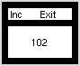

Updating a text window
A text VBT does not have to display an unchanging string
like the label in a button.
Using the subprocedure TextVBT.Put it is possible to
update the window so that it displays different text.
Program
Update.m3
illustrates this.
Everytime the Inc button is pushed
a global variable is incremented.
The new value is displayed in the main window.
Converting an integer to a string requires
the procedure Int
from the standard library module Fmt.
In the horizontal bar across the top of the window are two
buttons.
Besides the Inc button there is the Exit button
which terminates the program.
The two VBT's are joined horizontally into a split VBT.
Unlike a text VBT
a split VBT has other VBT's as subordinate pieces.
The function Cons in the HVSplit interface joins
several VBT's into a horizontal or vertical unit.
A TextureVBT, a leaf VBT, is used to make a long, thin VBT
of a particular texture and color,
In this case, a solid VBT of the background color is used to
divide the button bar from the main window showing the text.
All three VBTs are aligned vertically and a border is drawn
around them.
The following images
-
 Update 1
Update 1
- Update 2
contain two views of the screen during the running of the program.
In the first we see what is displayed when the
program is first executed.
The initial value of the variable num is 97.
In the second we see the situation
after the Inc button has been pressed several times.
The current value of the variable num, 102, is displayed
in the window.